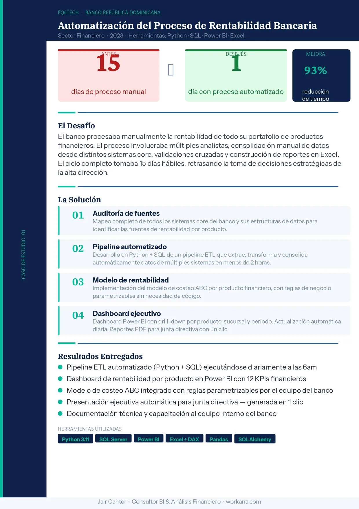
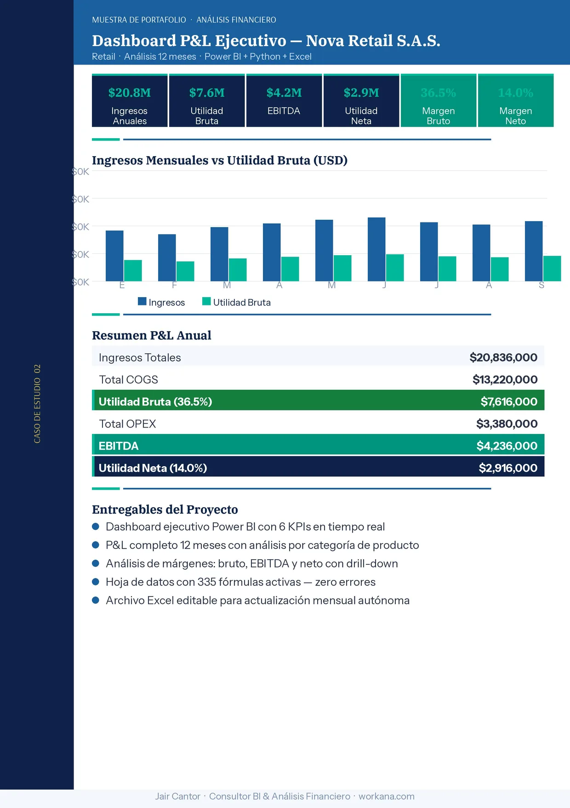

Consultor BI & Análisis Financiero
Datos financieros listos para decidir, no solo para reportar.
Construyo dashboards Power BI, modelos P&L, proyecciones, pitch decks y automatizaciones con Python + SQL para equipos que necesitan claridad ejecutiva en días, no en semanas.
- 6+
- años de experiencia
- 30+
- proyectos entregados
- 93%
- reducción de tiempo lograda
Visibilidad ejecutiva
Un dashboard, toda la empresa
EBITDA, márgenes y ventas en un solo clic
Power BI Executive View
Ingresos$20.8M
EBITDA$4.2M
Margen neto14%
Python ETL
SQL Server
DAX
Excel
daily_report.py
extract -> transform -> dashboard
Dashboards interactivos
Visuales que responden a preguntas de negocio.
La entrega puede incluir filtros por periodo, canal, región, categoría o responsable, con métricas que cambian al instante para explorar escenarios sin pedir nuevos reportes.
Rentabilidad y flujo
Dashboard financiero ejecutivo
68%
Avance del objetivo
Automatización diaria del reporte financiero con variaciones por producto y periodo.
Servicios
Soluciones financieras modulares para cada etapa del negocio.
Puedes empezar con un dashboard puntual o construir un sistema BI completo con automatización, modelo financiero y presentación ejecutiva.
Ventas & CRM
Embudo comercial, conversión, ticket promedio, forecast, oportunidades por vendedor y seguimiento de clientes.
Marketing & crecimiento
ROI por campaña, CAC, leads, tasa de conversión, canales, cohortes y atribución para optimizar inversión.
Operaciones & logística
Inventario, cumplimiento, tiempos de entrega, productividad, incidencias, capacidad y alertas operativas.
Dashboards Power BI
KPI ejecutivos, drill-down por producto, sucursal o periodo, visuales claros y actualización automática.
Análisis P&L y rentabilidad
Lectura de ingresos, COGS, OPEX, EBITDA, margen bruto y utilidad neta con recomendaciones accionables.
Modelos financieros
Proyecciones a 3 años, escenarios pesimista/base/optimista, flujo de caja y estructura para inversionistas.
Automatización Python + SQL
Scripts y pipelines ETL que consolidan datos desde ERP, bases de datos o archivos Excel/CSV.
Pitch decks ejecutivos
Presentaciones para rondas de inversión, comites directivos o comunicación financiera con narrativa clara.
Reportes automaticos
Generación de PDFs, presentaciones o archivos editables con un clic o en horario programado.
Casos de éxito
Resultados demostrables en banca, finanzas y retail.
FQ4TECH · Banco República Dominicana
Automatización del proceso de rentabilidad bancaria
Se pasó de un ciclo manual de 15 días hábiles a un proceso automatizado de 1 día con Python, SQL, Power BI y Excel.
15 días
->
1 día
93% menos tiempo


Nova Retail S.A.S.
Dashboard P&L ejecutivo
Análisis de 12 meses con ingresos, utilidad bruta, EBITDA, utilidad neta y margen por categoría.
Servicios & paquetes
Tres paquetes para convertir datos en decisiones.
Todos incluyen alcance claro, revisiones y entrega en el plazo acordado.
Básico
$200 USD
Entrega: 3 días- Dashboard Power BI hasta 6 KPIs
- 1 fuente de datos Excel/CSV
- Diseño ejecutivo profesional
- 1 revisión incluida
Más popular
Profesional
$450 USD
Entrega: 5 días- Dashboard completo con KPIs ilimitados
- Hasta 3 fuentes de datos
- Análisis P&L o rentabilidad
- Presentación ejecutiva 10 slides
- 2 revisiones + sesión de entrega
- Archivo editable entregado
Premium
$950 USD
Entrega: 10 días- Sistema BI financiero completo
- Python + SQL automatización
- Modelo financiero + proyecciones
- Pitch deck inversionistas 15 slides
- Revisiones ilimitadas
- Soporte 30 días post-entrega
Servicios adicionales
Pitch Deck para Inversores$150 - $300
Modelo de Proyecciones 3 años$200 - $400
Automatización de Reportes$300 - $600
Análisis de Rentabilidad$150 - $350
Proceso de trabajo
Así trabajamos juntos.
Un proceso claro, transparente y orientado a resultados.
Brief & alcance
Me envías tus datos y el objetivo. Defino alcance, herramientas y plazo. Respondo en menos de 24 horas con una propuesta detallada.
Análisis & construcción
Proceso tus datos, construyo el modelo y el dashboard. Envío un avance al 50% para validar el enfoque.
Entrega & revisión
Entrego el archivo completo antes del plazo. Incluyo rondas de ajustes para asegurar que el resultado cumpla el brief.
Soporte post-entrega
Respondo dudas sobre el uso de los entregables. El paquete Premium incluye 30 días de soporte para ajustes menores.
Experiencia real en banca y finanzas
He automatizado procesos reales en bancos, reduciendo tiempos de días a horas.
Stack técnico completo
Power BI + Python + SQL + Excel: desde extracción y modelado hasta presentación ejecutiva.
Entrega puntual garantizada
Trabajo con plazos realistas, comunicación anticipada y entregables editables.
Comunicación clara
Explico cada decisión en lenguaje de negocio, sin tecnicismos innecesarios.
Canales de contacto · Colombia
¿Listo para empezar?
Conversemos por el canal que prefieras. Respondo con contexto, alcance y una ruta clara para convertir tus datos en decisiones.